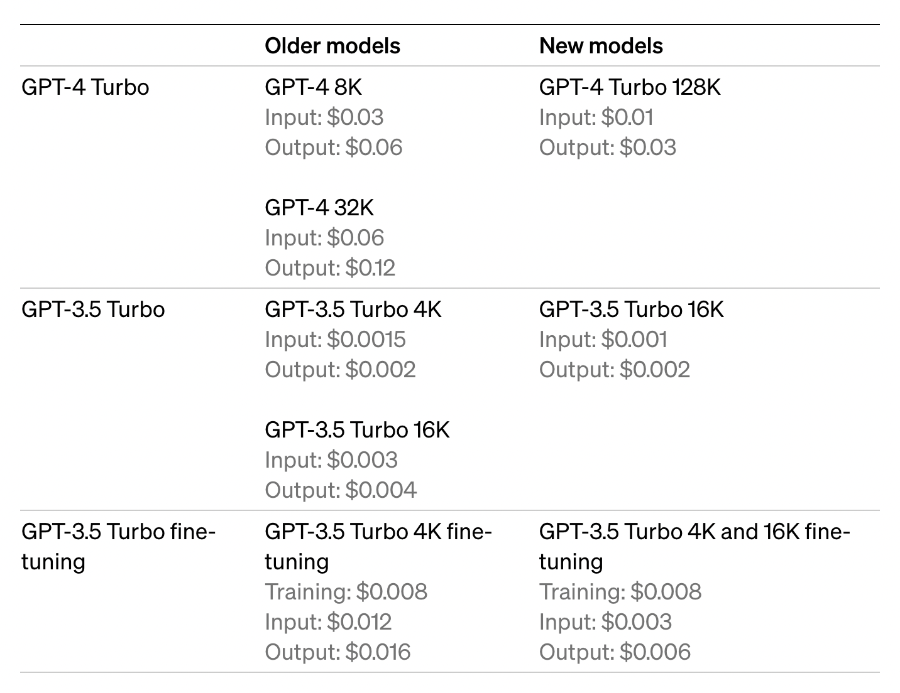

بالاخره کنفرانس OpenAI Dev Day در ۶ نوامبر با حضور ۹۰۰ نفر در سانفرانسیسکو برگزار شد. همانطور که انتظار میرفت، OpenAI در این کنفرانس محصولات و بروزرسانیهای جدید خود را معرفی کرد. ساتیا نادلا مدیرعامل مایکروسافت نیز به صورت غیرمنتظره در این کنفرانس حضور پیدا کرد. مایکروسافت با سرمایهگذاری ۱۳ میلیارد دلاری در OpenAI بزرگترین شریک این کمپانی بوده و به مدلهای GPT به صورت انحصاری دسترسی دارد. ساتیا نادلا ساخت بهترین سیستمها را اولین کار مایکروسافت معرفی کرد و از توسعهدهندگان خواست برای توسعه و انتشار سرویسهای خود از پلتفرمهای مایکروسافت استفاده کنند. قرار شد به شرکتکنندگان در این کنفرانس دسترسی به Github Enterprise اهدا شود.

طبق گفته سم آلتمن مدیرعامل و موسس OpenAI بعد از حدود یکسال از معرفی ChatGPT این سرویس به ۱۰۰ میلیون کاربر هفتگی رسیده و بیش از دو میلیون توسعه دهنده در حال استفاده از APIهای این کمپانی برای تولید سرویسها و اپلیکیشنهای خود هستند. به صورت خلاصه محصولات و بروزرسانیهای معرفی شده در این کنفرانس عبارتند از:
- نسخه بهبودیافته GPT-4 با نام GPT-4 Turbo معرفی شد. این مدل میتواند تا ۱۲۸هزار توکن را به عنوان ورودی دریافت کند.
- مدلهای GPT-4 Turbo ،DALL-E3 ،TTS و به زودی Whisper از طریق API در دسترس قرار گرفته است.
- برای حمایت از کاربران در برابر نقض حق کپیرایت Copywrite Shield معرفی شد.
- نسخه جدید Whisper و بروزرسانی جدید GPT-3.5 Turbo معرفی شد.
- بهبود فالو کردن دستورات، بهبود Function Calling، قابلیت Json Mode و پارامتر Seed معرفی شد.
- با بهبودهای انجام شده هزینه دسترسی به مدلهای OpenAI کاهش پیدا کرده است.
- امکان کاستومایز کردن ChatGPT و فروش آن در GPT Store (به زودی) معرفی شد.
- قابلیت Assistants API برای تولید سادهتر اپلیکیشنهای مبتنی بر مدلهای OpenAI معرفی شد.
در ادامه جزئیات بیشتری از این بروزرسانیها معرفی میشود.

مدل GPT-4 برای بار اول در ماه مارس سال جاری معرفی شد و در ماه جولای به صورت عمومی در دسترس قرار گرفت. اکنون نسخه بهبود یافته این مدل با نام GPT-4 Turbo معرفی شده است. دیتای مورد استفاده برای آموزش این مدل تا آپریل ۲۰۲۳ به روز بوده است. مدل GPT-4 Turbo دارای ۱۲۸ هزار Context Window است. منظور از Context Windows در مدلهای بزرگ زبانی تعداد توکنهایی که میتواند به عنوان ورودی در یک Prompt (دستور) از کاربر دریافت کند. ۱۲۸ هزار توکن تقریباً معادل ۳۰۰ صفحه متن در یک دستور است! با بهبودهای انجام شده هزینه توکنهای ورودی سه برابر و هزینه توکنهای خروجی ۲ برابر کاهش پیدا کرده است. برای سادگی میتوانید هر توکن را معادل یک لغت در نظر بگیرید. در مدلهای بزرگ زبانی بردار توکنهای ورودی به برداری توکنهای خروجی تبدیل میشود از این رو سایز ورودی و خروجی در هزینه عملیات تاثیر دارد. طبق گفته OpenAI مدل جدید در دنبال کردن دقیق دستورات عملکرد بهتری دارد. به عنوان مثال با دستور "همیشه در فرمت XML پاسخ بده" در یک مکالمه پیوسته با این مدل، فرمت XML همواره رعایت خواهد شد.

شرکت OpenAI امکان شخصیسازی ChatGPT برای اهداف و کابردهای خاص را فراهم کرده است. این قابلیت GPTs نامیده شده و کاربران میتوانند از طریق این آدرس به این قابلیت دسترسی داشته باشند. قابل ذکر است که منظور از شخصیسازی ChatGPT آموزش مدل جدید و یا برنامهنویسی آن نیست بلکه تعریف Promptها و فراهم کردن دیتای مورد نیاز برای کاربرد مورد نظر است. قرار است به زودی با معرفی GPT Store امکان اشتراک گذاشتن و کسب درآمد از GPTs برای کاربران فراهم شود. مشابه چنین اقدامی قبلاً توسط Quora از طریق پلتفرم Poe معرفی شده بود.

شرکت OpenAI مدل GPT-3.5 Turbo را نیز با قابلیتهای جدیدی به روز کرده است. در این بروزرسانی این مدل میتواند ۱۶هزار توکن را به عنوان ورودی دریافت کند. در دنبال کردن دستورات بهبود یافته و از Json Mode و فراخوانی موازی تابع نیز پشتیبانی میکند. در هفتههای آینده این تغییرات برای تمامی کاربران قدیمی این مدل به صورت خودکار فعال خواهد شد.
این قابلیت برای آسان کردن تولید اپلیکیشنهای مبتنی بر مدلهای OpenAI معرفی شده است. در حال حاضر Assistants API به Code Interpreter، قابلیت Function Calling و جستجوی در اینترنت دسترسی دارد. برای تست آن به اینجا و برای جزئیات فنی به اینجا مراجعه کنید. برای نمونه در ویدئو زیر پیادهسازی یک Assistant با عنوان گالیله برای پاسخگویی به سوالات نجوم را مشاهده میکنید. پس از تعریف Assistant یک Thread ساخته شده و message به آن Thread اضافه میشود. سپس Assistant با استفاده از تنظیمات از پیش تعریف شده به message پاسخ میدهد.
در دسترس قرار دادن مجموعهای از مدلها از طریق API
۱. مدل GPT-4 Turbo به همراه بینایی: کاربران میتوانند از طریق API به مدل جدید GPT-4 Turbo تصویر ارسال کنند. این قابلیت برای تولید caption برای تصاویر و یا تشخیص اشیا مختلف در تصویر به کار میرود. به عنوان نمونه اپلیکیشن BeMyEyes از این قابلیت برای کمک به افراد نابینا و کم بینا برای جهتیابی و پیدا کردن اشیا استفاده میکند.
۲. مدل DALL-E 3: نسخه سوم DALL-E چند ماه پیش ریلیز شد. اکنون کاربران میتوانند ازطریق API برای تولید تصویر از این مدل استفاده کنند. هزینه دسترسی به آن به ازای هر تصویر تولید شده از ۰.۰۳ دلار شروع میشود.
۳. مدل Text-to-speech (TTS): این مدل متن ورودی را با صدای مشابه انسان میخواند. به عنوان نمونه به این ویس گوش دهید.
معرفی Copyright Shield
معرفی ابزارهای مبتنی بر هوشمصنوعی مولد نگرانیهایی را در مورد حق کپیرایت به همراه داشته است. از آنجایی که برای آموزش چنین مدلهایی از محتواهای موجود استفاده شده است ممکن است خروجی تولید شده توسط چنین مدلی منجر به نقض کپیرایت شود. شرکت OpenAI با معرفی Copyright Shield سعی کرده که به این نگرانی پاسخ دهد. براساس اعلام این شرکت اگر هر یک از کاربران OpenAI با دعاوی حقوقی مبنی بر نقض حق کپیرایت روبرو شود، این شرکت تمامی هزینههای متحمل شده بابت آن را پرداخت خواهد کرد.
نسخه جدید مدل اپنسورس OpenAI برای تبدیل صوت به متن به نام Whisper large-v3 نیز معرفی شد. برای مشاهده جزئیات بیشتر درباره این مدل به ریپوزیتوری آن در گیتهاب مراجعه کنید. قرار است در آینده این مدل از طریق API در اختیار کاربران قرار بگیرد.
با استفاده از پارامتر Seed کاربر میتواند کنترل بیشتری روی خروجی داشته و آن را دوباره تکرار کند. تا قبل از معرفی این پارامتر خروجی مدل برای ریکوئستهای مختلف میتوانست تغییر کند. برای دریافت پاسخ یکسان (Deterministic) باید مقدار Seed برابر یک عدد صحیح تعریف شده و ورودی یکسانی به مدل ارسال شود. اگر ورودی تغییر کند حتی با وجود تعریف Seed خروجی میتواند تغییر کند.
کاربران میتوانند با فعالسازی این قابلیت پاسخ مدل را به فرم json دریافت کنند. این قابلیت تولید پاسخ معتبر به فرمت json را تضمین میکند. در حالی که تا قبل از معرفی این قابلیت امکان تولید فرمت غیر معتبر json وجود داشت.
بروزرسانی قابلیت Function Calling
با بروزرسانی انجام شده قابلیت Function Calling میتواند به طور همزمان (Parallel) چند تابع را فراخوانی کرده و زمان اجرا شدن توابع را کاهش دهد.
کاهش هزینهها
با بهبودهای انجام شده هزینه دسترسی به مدلهای OpenAI براساس سایز توکن ورودی و خروجی کاهش پیدا کرده است. در مدلهای بزرگ زبانی سایز ورودی و خروجی روی حجم محاسبات و در نتیجه هزینه اجرای عملیات تاثیر مستقیم دارد. کاهش هزینهها در جدول زیر مقایسه شده است.

جزئیات هر کدام از محصولات و خدمات در متن مقاله رفرنس داده شده است.
۱. برای مطالعه جزئیات این کنفرانس اینجا را بخوانید.
۲. برای دیدن کنفرانس اینجا را مشاهده کنید.
۳. Microsoft CEO Nadella uses surprise appearance at OpenAI event to lure developers to Azure cloud
اگر مایل به دریافت این خبرنامه در پستالکترونیک خود هستید از اینجا ثبتنام کنید. این خبرنامه هر دو هفته به پست الکترونیک شما ارسال خواهد شد. همچنین میتوانید با عضو شدن در کانال تلگرام این خبرنامه، در سریعترین زمان در جریان مقالات جدید قرار بگیرید.


دیدگاه خود را بنویسید